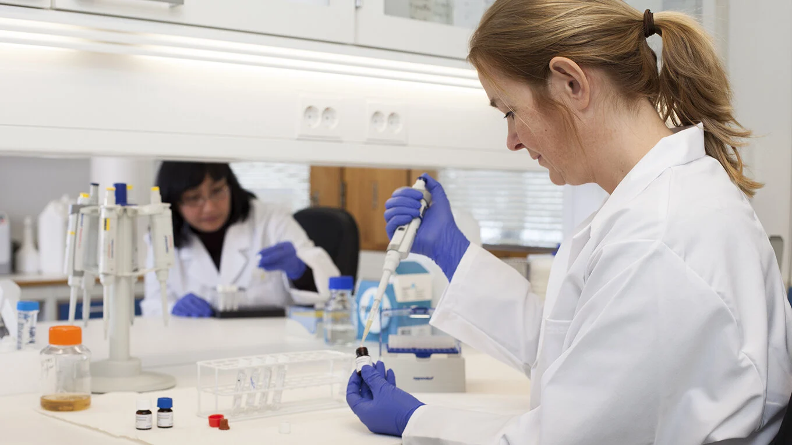

HOME
Business
Sports
Health
science
Four medical breakthroughs from Norway

A number of Norwegian companies have made a difference in the lives of patients all over the world.
Tremendous strides have been made in the fields of medicine and pharmaceuticals during the past century.
These are the result of large and small advances made at laboratories, universities and hospitals around the globe. Below is a look at four Norwegian companies that have made vital contributions to medical science and who are poised to continue their ground-breaking work.

Fighting cancer that has spread to the bones
Some types of cancer are more difficult to treat than others. When cancer has spread to the bones, for example, there are few alternatives. Available treatments have major side-effects and are of varying efficacy. Fortunately, a Norwegian company has found a way to slow bone metastases.
Building on research conducted at Oslo University Hospital, Radiumhospitalet, Algeta has developed a cancer drug based on radium-223, a radioactive isotope. While radium treatment of cancer was widespread in the past, it has more or less been replaced by alternatives with fewer side-effects. Algeta’s breakthrough is a targeted drug that is highly precise and has a short half-life, thereby minimising side-effects. The drug was launched under the name Alpharadin, and is now called Xofigo.